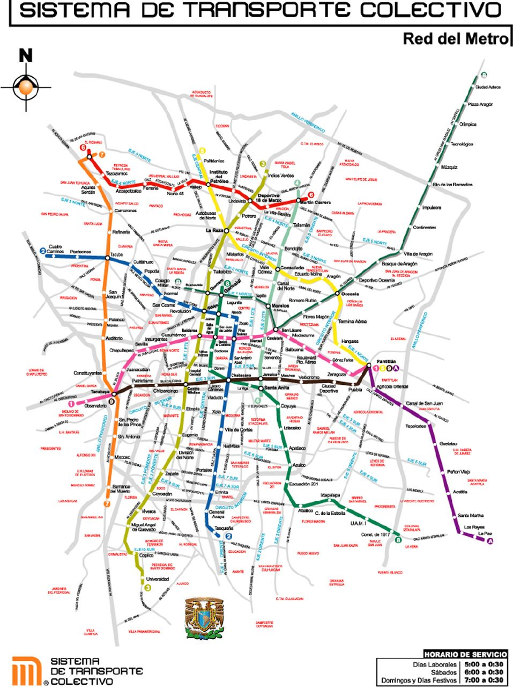

Mexico City has one of the biggest cities in the world and a big city of course have a lot of people, imagine that you and all your classmates have to go to the zoo but there's only one car, you won't fit inside and we will have to do a lot of rides. That's why the metro was created because it is like a car that can move a huge amount of people.
But you know, although the metro exists there's still a lot of people so they have to wait to get their turn and this make them to arrive late to school, to their jobs and even the movie theater.

How to solve it
In this part you can find why I want to solve this, how others have done it and which steps I am going to take to find a solution
Our client is Sistema de Transporte Colectivo (STC), a public-decentralized organism that owns and operates the Mexico City’s Subway System.
Our users group is composed by CDMX’s citizens, tourists and people traveling for job, educational or recreational purposes.
No technological solution
Applying the concept of "Cities of short ways" which is based in locating the main services of people in strategical points of the city.
This concept is applied in Barcelona and its useful because the lenght that they have to move to get to basic services is less, which makes more efficient their public transportation and also makes possible to find alternative solutions, like riding a bike or walking.
Exam grade and qualitative evaluation
I think I have done such a good job trying to understand deeply the problematic during the first partial, evaluating if it's possible to implement an technological solution according to the context and user.
I believe that the job done, research about urban planning concepts, data analysis and other solutions applied will help me to find a sustainable solution. Being honest I'm proud of the effort I've been putting in this project, because is a problem that really motivates me. I know that I have more work to do because I'm working alone, but was a personal decision due to my absence during the partial and because I didn't wanted to affect my partner.
On the other hand about the exam, I think I done a good work (not the best I could), but I tried to explain the problem as easy as I could, even is a complex problem.
Enrique Anaya Bovio
A01630317
Enrique
Personal motivations
Since I was studying srchitecture I've been really interested in urban planning and effienciency in public transportation.
I feel compromised with my community to create a solution to challenging problematics, I believe in the power of creating sustainable and profitable solutions that can also impact the lives of the people and address their needs.
Bus Tracker
Chicago, Illinois
Chicago Transit Authority use GPS dispositives to inform about the real time location of the buses, providing also the estimated time in which the bus will arrive to the nearest bus stop.
moovit
Mobile app
moovit is used in 77 countries around the world, counts with a mapping service, departures and arrivals times. This app can be used to plan your rides.
SBB CFF FFS
Switzerland
Schweizerische Bundesbahnen is the swiss company of trains, they offer services to buy tickets online, timetables and the opportunity to buy your tickets in advance to manage your trips.
Design thinking
methodology
Design thinking utilizes elements from the designer's toolkit like empathy and experimentation to arrive at innovative solutions. By using design thinking, you make decisions based on what future customers really want instead of relying only on historical data or making risky bets based on instinct instead of evidence.
“Design thinking is a human-centered approach to innovation that draws from the designer's toolkit to integrate the needs of people, the possibilities of technology, and the requirements for business success.” - Tim Brown
The methodology is iterative and follows five steps:
Empathize (to undestand the challenge).
Define (to articulate the problem you want to solve).
Ideate (to find potential solutions).
Prototype (to test your idea).
Test (to validate, correct and improve).